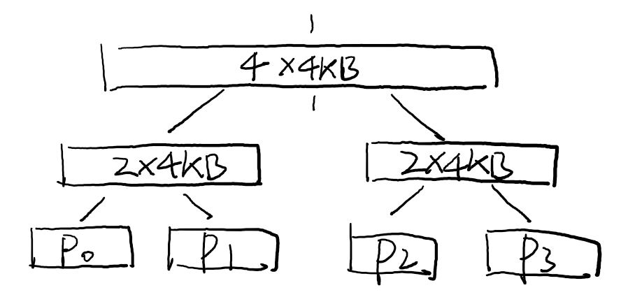

public: True class: center, middle # [C] 并发数据结构 蒋炎岩 <jyy@nju.edu.cn> 南京大学计算机软件研究所 --- # 本讲概述 > 引子：我们已经知道互斥锁的原理和实现了，它们能在多处理器/多线程环境下实现顺序、原子性和可见性。 > > 怎样用互斥锁实现更多的功能？ ---- * 并发数据结构 * 并发malloc & free --- class: center, middle # (并发)数据结构 --- # 数据结构 > Abstract Data Type (ADT): a mathematical model for data types, where a data type is defined by its behavior semantics from the point of view of a *user* of the data, specifically in terms of possible values, possible operations on data of this type, and the behavior of these operations. > > ADT是接口，ADT用某个具体的数据结构实现 ---- 你们学过的数据结构 * Array, vector, linked list, (balanced) binary search tree, hash table, skip list, ... --- class: center, middle # 从链表说起 --- # List Head (M2, Linux Kernel) 再简单不过的双向循环链表(list head) * 不过和我们的`vector<>`不同，它.red[没有任何的data field] * 它是.red[嵌入]到其他数据结构中的链表 ```c struct list_head { struct list_head *next, *prev; }; #define INIT_LIST_HEAD(ptr) do { \ (ptr)->next = (ptr); (ptr)->prev = (ptr); \ } while (0) ``` 操作选讲：插入(`list_add`, `list_add_tail`)、删除(`list_del`) --- # List Head: 使用 “嵌入式”链表：`struct list_head`作为数据域嵌入其他对象中 * 思考题：.green[这有什么好处？] .center[<img src="../static/wiki/os/2019/img/list_head.png" width=500px/>] --- # List Head: 使用 (cont'd) ```c struct node { int data; struct list_head list; }; ``` * 所有操作(插入、删除)都是对`node->list`进行的 ---- 从`struct list_head`到`struct node`: ```c #define list_entry(ptr, type, member) \ ((type *)((char *)(ptr) - \ (unsigned long)(&((type *)0)->member))) list_entry(ptr_to_list_head, struct node, list); ``` --- # 链表：并发访问 考虑管理操作系统中的进程(三种操作)： * 在头部插入(创建进程) * 删除某个节点(进程结束) * 遍历(procfs, 但实际实现会复杂得多) ---- 最简单的方式就是为整个链表上锁 * 保证顺序、原子性、可见性 ```c void list_xxx() { spin_lock(&list->lock); // 插入/删除/遍历 spin_unlock(&list->lock) } ``` --- # 链表：并发访问 (cont'd) 考虑系统中有很多进程 * 遍历是长时间操作，一旦遍历开始，进程就无法创建/结束 * 性能优化？ ---- 重要的事情说三遍： * .red[脱离workload做优化就是耍流氓] * .red[脱离workload做优化就是耍流氓] * .red[脱离workload做优化就是耍流氓] ---- 实际情况：遍历远少于插入/删除 --- # 并发链表：设计与实现 插入： ```c lock(lock_of(head)); // 锁住链表头 ``` 删除： ```c lock(lock_of(node)); // 锁住需要修改的三个节点 lock(lock_of(node->prev)); lock(lock_of(node->next)); ``` 遍历： ```c cur = head; while (1) { lock(lock_of(cur)); if (cur->next == head) { unlock(lock_of(cur)); break; } lock(lock_of(cur->next)); unlock(lock_of(cur)); } ``` --- # 并发链表：设计与实现 黄金准则：.red[小心小心再小心]，或者干脆放弃吧 ```c // T1 (del): lock(lock_of(node)); // T2 (traverse) lock(lock_of(cur)); // cur == node->prev lock(lock_of(cur->next)); // held by T1; wait // T1 (del): lock(lock_of(node->prev)); // held by T2; wait ==> DEADLOCK ``` ---- 不会砸到自己脚的办法： * 插入和删除都对`head`上锁 * 删除时只需要额外上`node->prev`和`node`的锁 * (太容易搞砸了！) --- # 其他并发数据结构 Stack * 基础数据结构，有很多神实现 Queue * 基础数据结构，有很多神实现 Hash table (set/map) * 假设访问随机，可以把hash table分割成若干部分，每部分持有独立的锁 Skip list * 支持快速插入/删除/查找的排序链表 --- # 实现并发数据结构 无锁(lock-freedom)算法 * 使用原子操作实现 * 在罕见的情况下可能会spin ---- Read-biased实现 * reader-writer lock * read-copy-update --- # 轻松一下: C++ RAII RAII: Resource Acquisition Is Initialization - 非常常见的编码规范 ------ ```c++ class HoldLock { pthread_mutex_t *mutex; public: HoldLock(pthread_mutex_t *m): mutex(m) { pthread_mutex_lock(mutex); } ~HoldLock() { pthread_mutex_unlock(mutex); } } void insert(node_t *node, node_t *cur) { HoldLock lk(&list_lock); ... } ``` --- # 轻松一下: C RAII 不妨让我们hack一下 ```c #define HoldLock(lk) \ for (int __lock_var = (pthread_mutex_lock(lk), 0); \ __lock_var < 1; \ pthread_mutex_unlock(lk), __lock_var++) void insert(node_t *node, node_t *cur) { HoldLock(&list_lock) { ... // 此处不能调用break/return等跳出此块 } } ``` --- class: center, middle # malloc/free --- # 有没有好奇过内存分配是怎么实现的？ `new()`/`malloc()`自动就有了一个对象 * 返回一个“没用过内存”的指针 .center[<img src="/static/wiki/os/2019/img/no-object.gif" width=350px/>] .center[(那就new一个吧)] --- # 机制与策略分离 > The separation of mechanism and policy is a *design principle* in computer science. It states that .red[mechanisms] (those parts of a system implementation that control the authorization of operations and the allocation of resources) should not dictate (or overly restrict) the .red[policies] according to which decisions are made about which operations to authorize, and which resources to allocate. 机制：“获得一大块内存” 策略：“分配任意大小的内存” --- # 实现malloc(): 机制 对于直接运行在计算机硬件上的程序，初始时有一段可用的物理内存(`_heap`)，之后malloc/free都在这个“池子”中完成 ---- 相当于维护一个数据结构，它管理一段内存`[start, end)`，支持两种操作： * `alloc(size)` - 返回一段先前未分配的内存`[x, x+size)` * `free()` - 标记一段之前分配过的内存为可用 --- # 实现malloc(): 机制 对于操作系统上的进程，操作系统提供两个系统调用 ```c // 古代方法 void *sbrk(intptr_t increment); // 现代方法 void *mmap(void *addr, // 地址，addr == NULL size_t length, // 大小 int port, // 保护 PROT_READ | PROT_WRITE int flags, // MAP_ANONYMOUS，分配内存 int fd, // 不涉及任何文件描述符；-1 off_t offset); // 0 ``` --- # 一个简单的策略 用链表/BST存储内存里可用的连续空间 * `malloc(size)`时，在链表中找到一个空间足够的块 (因此有first-fit, best-fit, etc.) * `free()`时，把`[x, x+size)`插入到链表的正确位置，并合并相邻节点 ---- 算法的缺陷 * 每次查找都耗费很多时间 * 对multi-core不太友好——并行分配很困难 * 容易产生碎片 --- # 高效的malloc/free 重要的事情再说三遍： - .red[脱离workload做优化就是耍流氓] - .red[脱离workload做优化就是耍流氓] - .red[脱离workload做优化就是耍流氓] ---- 上哪里去找workloads呢？ * 对于操作系统内核开发者来说，能够得到malloc/free的调用序列 * 对于应用程序开发者来说，我们有.red[trace]！ --- # Workload GET 看看实际中的程序，究竟是怎样管理内存的？ * `ltrace python -c '2**10000' 2>&1 | grep '^malloc\|^free'` * 参考：[mtrace.sh](/static/wiki/os/2019/demos/mtrace.sh) * 思考题：.green[怎么得到Linux Kernel的alloc/free序列？] ---- 抛出问题(需求)： * 大量的小内存malloc/free (对应某些访问频繁的结构体, B~KB) * 次频繁的较大内存的malloc/free (KB~MB) * 暂时不考虑更大的内存分配(没有使用场景) * 多处理器并行分配 --- # 简化问题 分成大内存 + 小内存两个问题 * 大内存(申请不频繁)：全局申请 * 小内存(申请频繁，需要多处理器并行)：每个处理器都向全局的池子申请一定数量的中等大小内存(例如4KB)到本地；在本地分配小内存 --- # 大内存 Buddy System (1963) * 64KB = 32 KB x 2 = 16KB x 4 = 8KB x 8 = 4KB x 16 * 有没有想到interval tree -- 如果只支持分配<math>2^k</math>个页面，在interval tree的对应node上分配就行啦！ .center[] --- # 小内存：快快快 尽量.red[在处理器内分配]，减少多处理器竞争 * 在内存不足时从Buddy System里得到一个新的页 * JVM内部也有类似实现：TLAB (thread-local allocation buffer) ---- Slab分配器 * 为每个不同的大小准备不同的页面 * 每个页面用bitmap管理对象 --- # L1编程建议 (1) .red[先在native上调试/测试] * native不支持MPE * 但可以专门写一个native的driver (利用[threads.h](/static/wiki/os/2019/demos/threads.h)) ---- Test driver * 生成每个线程的workload * 记录每个malloc/free的返回值 * 检查是否有double-alloc等bug --- # L1编程建议 (2) ```c void *alloc(size_t size) { #ifdef CORRECTNESS_FIRST spin_lock(&alloc_lock); start += size; // 直接分配 void *ret = start; spin_unlock(&alloc_lock); return start; #else // fancy algorithm #endif } void free(void *ptr) { #ifdef CORRECTNESS_FIRST return; // memory leaks! #else // complex stuffs #endif } ```